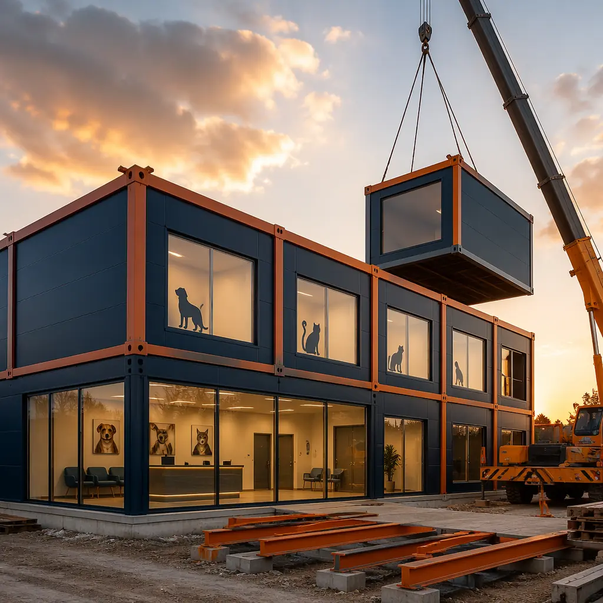
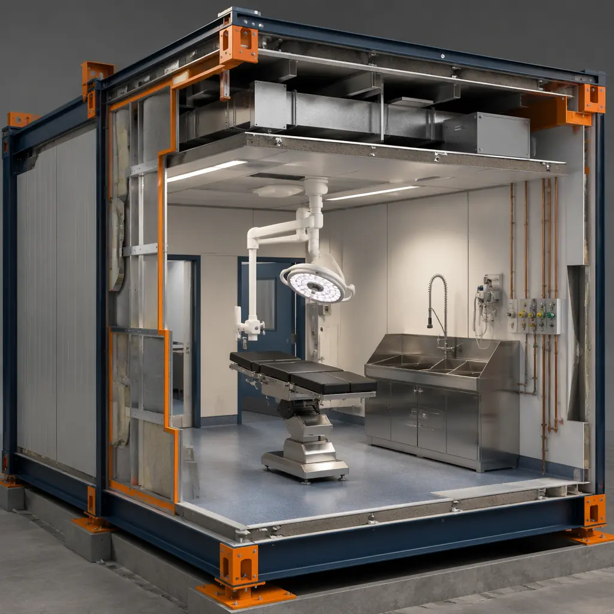
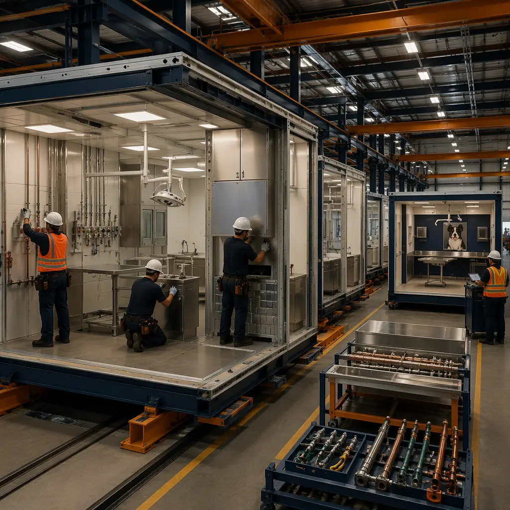

Veterinary medicine has undergone a structural transformation in the last decade. The corporatization of veterinary practices — with groups like Mars Veterinary Health (Banfield, VCA, BluePearl), National Veterinary Associates (NVA), and VetCor now owning over 25% of US companion animal practices — has created demand for standardized, rapidly deployable clinic formats that can be rolled out across multiple markets. Simultaneously, the specialty and emergency veterinary sector has exploded: the American Veterinary Medical Association (AVMA) reports that specialty referral visits grew 67% from 2014 to 2024, driving demand for facilities with advanced imaging, multi-table surgical suites, and 24-hour critical care capabilities that conventional construction struggles to deliver on the compressed timelines that practice owners and corporate groups require. Modular veterinary clinic construction compresses the delivery timeline from 14–24 months to 8–14 months while meeting the specific infection control, radiology shielding, animal housing ventilation, and client flow requirements that distinguish veterinary facilities from human healthcare buildings. For practice owners evaluating construction delivery methods, see our analysis of modular healthcare construction and our guide to modular medical clinic construction — building types that share regulatory and operational overlap with veterinary facilities.

Why Veterinary Construction Is Different — And Why Modular Addresses the Unique Challenges
Veterinary facilities occupy a regulatory and operational middle ground between human healthcare and commercial construction. The building must satisfy commercial building codes while meeting infection control standards that approach human surgical facility requirements, animal housing standards defined by state veterinary practice acts and AAHA (American Animal Hospital Association) accreditation guidelines, and occupational safety requirements for staff handling anesthetic gases, radiation equipment, and zoonotic disease risks. These overlapping requirements create design complexity that conventional construction handles through sequential trade coordination — and the resulting schedule stretches practice launches across multiple revenue cycles.
Infection control in a multi-species environment. Unlike human hospitals that treat one species with predictable pathogen profiles, veterinary hospitals treat dogs, cats, exotic pets, and occasionally livestock — each carrying species-specific pathogens that require isolation protocols. A veterinary hospital's infection control design must include separate isolation wards with independent HVAC systems (minimum 12 air changes per hour, HEPA filtration, negative pressure relative to adjacent spaces), impervious flooring with coved base transitions in all treatment areas, and surface materials rated for accelerated hydrogen peroxide and quaternary ammonium disinfectant exposure. The National Association of State Public Health Veterinarians (NASPHV) recommends that veterinary facilities maintain a clear separation between "dirty" zones (isolation, waste handling) and "clean" zones (surgery, prep, sterile storage), with dedicated circulation paths that prevent cross-contamination. In modular construction, these zones are built into separate modules with factory-installed HVAC zoning that achieves the required pressure differentials before shipping. On-site commissioning of conventionally built veterinary isolation rooms frequently requires 3–5 rounds of air balancing adjustments — each round representing weeks of compressed construction schedule. For a broader discussion of infection control design in modular healthcare construction, see our guide to modular hospital construction.
Radiology and imaging suite shielding. For a deeper look, our modular urgent care centers — build wal… guide covers the details. A modern veterinary clinic requires radiography, ultrasound, and increasingly CT or cone-beam CT imaging suites. The shielding requirements for these spaces add structural complexity: a veterinary CT room requires 1/16-inch lead lining or equivalent in walls, floor, and ceiling, with the lead-continuity verified at every penetration (electrical conduit, HVAC duct, data cable). The lead-lined door alone weighs 300–500 lbs and requires a reinforced frame anchored to structural steel. In conventional construction, the lead shielding is installed by a specialty subcontractor after framing and MEP rough-in — a sequential dependency that adds 3–4 weeks to the critical path. In modular construction, the lead shielding is installed in the factory where the module's structural frame provides precise anchor points and the shielding continuity can be tested before wall finishes are applied. The radiography suite module arrives on site as a shielded, finished room — the only on-site work is connecting the dedicated power circuit and commissioning the imaging equipment.
Animal housing ventilation and noise control. Kennel areas, isolation wards, and ICU recovery spaces require mechanical ventilation that manages both air quality and acoustic environment. The AVMA recommends 10–15 air changes per hour in animal housing areas, with exhaust air discharged at least 25 feet from any building air intake. But the acoustic requirement is equally important: barking dogs in kennel areas can generate sustained noise levels of 85–100 dB, and this noise cannot transmit to surgical suites (where surgeons need communication clarity) or to client consultation rooms (where practice owners discuss treatment plans and costs). Modular construction addresses this through factory-installed sound-rated wall assemblies (STC 55+) with staggered stud construction and acoustic insulation, tested in the factory rather than discovered during post-occupancy noise complaints. For veterinary practices located in retail shopping centers, where landlord noise restrictions are contractually enforced, modular factory-installed acoustic assemblies provide verified performance that conventional field-built partitions often fail to deliver. For additional insight on acoustic design in modular buildings, see our analysis of modular building design flexibility.

Clinic Typologies — Which Practice Model Benefits Most from Modular
Veterinary practices fall into several distinct facility typologies, and modular construction delivers different advantages for each. Understanding which typology your practice represents helps determine whether modular construction's speed, quality control, and cost predictability justify the delivery method for your specific project.
Small Animal General Practice (2,500–5,000 sq ft)
The one- to three-doctor companion animal practice is the most common veterinary facility type, representing approximately 70% of US veterinary clinics. These facilities require 3–4 exam rooms, a treatment area with wet table, a single surgical suite, radiography, a small laboratory/pharmacy, kennel areas for 15–30 animals, and reception/waiting with separate canine and feline waiting zones (a design feature that the AAHA and Fear Free certification programs strongly recommend to reduce patient stress). Modular construction compresses the delivery timeline for this facility from 12–18 months to 7–10 months — a timeline reduction that, for a practice generating $800,000–$1,200,000 annual revenue in a leased retail space, recovers $65,000–$100,000 in accelerated revenue per month of earlier occupancy. For corporate groups rolling out standardized small animal clinic formats across multiple markets, modular construction enables a prototype design that is pre-qualified with state veterinary boards and then produced repeatably — collapsing the design review timeline that would otherwise repeat for every individual site.
Specialty & Emergency Hospitals (8,000–20,000 sq ft)
Specialty and emergency veterinary hospitals are the fastest-growing segment of the veterinary construction market. These facilities include multiple surgical suites (soft tissue, orthopedic, neurosurgery), advanced imaging (CT, MRI, fluoroscopy), a 24-hour ICU with individual oxygen cages and continuous monitoring, an in-house laboratory capable of running CBC/chemistry/coagulation panels with 15-minute turnaround, and dedicated isolation capacity for infectious disease cases. The construction challenge in these facilities is the density of MEP systems: a 15,000 sq ft specialty hospital may require 400–600 amps of electrical service, medical gas piping (oxygen, medical air, scavenged anesthetic gas evacuation), and up to 15 independent HVAC zones with different pressure and filtration requirements. In conventional construction, coordinating these systems across 5–8 subcontractors working sequentially in confined ceiling spaces leads to change orders averaging 8–12% of the MEP contract value. In modular construction, the MEP systems are installed in the factory where the ceiling cavity is fully accessible before the module is enclosed — the same coordination happens, but it happens in a controlled factory environment where conflicts are resolved before drywall, not discovered during site installation.
Mixed-Use Veterinary + Retail (3,000–6,000 sq ft)
The fastest-growing segment of veterinary construction is the integration of veterinary services with retail pet care — clinics co-located with grooming, daycare, boarding, and retail pet supply operations. These facilities serve the "one-stop" pet parent expectation and generate multiple revenue streams from a single real estate footprint. The construction challenge is the separation of clinical spaces (surgery, treatment, isolation) from retail and boarding spaces that the public accesses — a regulatory requirement in most states that governs air pressure relationships, surface finishes, and staff circulation patterns. Modular construction addresses this by building the clinical "core" as a dedicated module cluster with its own HVAC system and air pressure regime, then connecting it to separately built retail and boarding modules that operate under commercial (not clinical) HVAC standards. This separation is designed into the module interfaces and tested in the factory — not improvised during on-site construction coordination. For practice owners considering adjacent business models, see our guide to mixed-use modular developments.

Cost Structure — What Veterinary Practice Owners Actually Pay
Veterinary construction costs vary by region, clinic type, and level of finish, but the cost structure follows patterns that allow meaningful comparison between modular and conventional delivery methods. The following analysis uses a 4,000 sq ft small animal general practice prototype (3 exam rooms, 1 surgical suite, radiography, treatment area, 20-animal kennel capacity, reception/waiting) as the reference case.
| Cost Category | Conventional ($) | Modular ($) | Difference |
|---|---|---|---|
| Shell & structure (4,000 sq ft at $180–220/sq ft) | 720,000–880,000 | 680,000–800,000 | −5–9% |
| Veterinary-specific MEP (medical gas, radiology power, isolation HVAC) | 140,000–180,000 | 120,000–155,000 | −14–17% |
| Interior finishes (impervious flooring, coved base, stainless steel surfaces) | 110,000–140,000 | 105,000–130,000 | −5–7% |
| Lead shielding (radiography suite) | 35,000–50,000 | 28,000–38,000 | −20–24% |
| Total hard cost | 1,005,000–1,250,000 | 933,000–1,123,000 | −7–10% |
The cost savings in modular veterinary construction are concentrated in the MEP and specialty subcontractor categories — the same categories that generate the most change orders in conventional projects. Factory installation of medical gas piping, lead shielding, and isolation HVAC systems eliminates the sequential trade coordination that drives these costs up in site-built veterinary clinics. For a broader discussion of modular construction cost structures, see our 2026 pricing guide for modular construction and our developer's guide to modular construction ROI.
Regulatory & Accreditation Pathway
Veterinary facilities are regulated primarily at the state level through veterinary practice acts administered by state veterinary medical boards. Approximately 35 states require facility inspections before a new veterinary premises license is issued, and the inspection criteria vary by state. The AAHA accreditation process — voluntary but pursued by approximately 15% of US companion animal practices — adds approximately 900 standards covering everything from surgical suite air exchange rates to kennel drainage slope requirements.
The modular construction advantage in this regulatory environment is that the factory-built modules can be pre-inspected at key construction milestones — MEP rough-in, lead shielding continuity, isolation room pressure testing — with documentation that satisfies state board facility inspection requirements without requiring the inspector to visit the construction site. For multi-site corporate veterinary groups, a single prototype module design can be pre-approved by the state board and then deployed across multiple locations within that state, compressing the regulatory review timeline from 6–12 weeks per site to a single pre-approval cycle. For practice owners navigating construction permitting for the first time, see our developer's guide to modular construction permitting and zoning.
Is Modular Right for Your Veterinary Practice?
Modular veterinary construction is not the right solution for every project — but it is the right solution for the specific profile that represents the fastest-growing segments of the veterinary construction market: corporate groups standardizing clinic formats across multiple markets, specialty/emergency hospitals where MEP system density drives conventional construction over budget and behind schedule, and practice owners building in retail shopping centers where landlord-mandated construction windows compress the build-out timeline to 12–16 weeks. The veterinary construction market is projected to reach $6.2 billion by 2028 (Grand View Research), driven by the 67% increase in specialty referral visits, the 42% increase in pet insurance penetration since 2020, and the wave of Baby Boomer practice owners selling to corporate consolidators who demand standardized, rapidly deployable facilities. For the manufacturers that invest in understanding the specific infection control, radiology shielding, and animal housing requirements of veterinary construction — and for the practice owners who evaluate them against these standards — modular delivery offers a timeline, cost, and quality proposition that conventional construction cannot match.